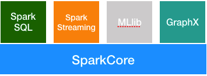

Spark整体介绍
Spark是一个快速的，多用途的计算系统。这是来自官网的自我介绍。一般敢自称系统的都是有两把刷子的，况且还是多用途的计算系统。Spark计算系统包含如下功能组件

Spark Core: Spark的核心功能模块。Spark SQL: 用于处理结构化数据。MLlib：用于机器学习。GraphX：用于图像处理。Spark Streaming：用于处理实时数据流。
包含如此多的功能，自称多功能计算系统也是可以的。这篇文章帮大家梳理一下学习Spark Streaming过程中可能会让你产生困惑的基本概念。
RDD
Spark Core 是 Spark的核心模块，这个模块提供了一个核心概念叫做RDD(resilient distributed dataset)。你可以简单的把它理解成一个数据片段集合，你要处理的源数据文件可以分解成很多个RDD。Spark为RDD提供了两种类型的操作，一种是transformations，一种是 action。
transformations：如果一个RDD经过某种操作之后，生成一个新的RDD，那么这个操作就是transaction的。比如，map,flatMap,filter等。action：对一个RDD进行计算操作，以生成某种结果，比如reduce，count等操作。
注意：所有的
transformations都是Lazy的，也就是说只有碰到action操作的时候才会执行前面的transformations操作。
DStream
Spark Streaming 是用来处理流式数据的，假设我们规定每隔一秒钟（通过duration设置）取一次数据，那么这段时间内积赞的数据就称为一个batch，里面的数据就用DStream表示。从编写代码的角度来看，你可以把DStream和RDD同等对待，因为他们的算子操作都是一样的。但是他们的数据结构还是有着本质不同的，我们可以把DStream简单的理解成是RDD加上了时间戳。如下图
DAG
Spark 使用DAG 进行数据建模，DAG 被称为有向无环图，有向无环图的定义是这样的 “在图论中，如果一个有向图从任意顶点出发无法经过若干条边回到该点，则这个图是一个有向无环图（DAG,directed acyclic graph）”，我们通过一个简单的例子来感受一下，Spark是如何使用DAG建模的。
下面的代码可以完成一段文本内容的各个单词的数量统计。
1 |
|
上面这段代码可以用下面这个图表示
这就是一个简单的DAG模型，数据按照方向流动，再也回不到原点。Spark Streaming将这个DAG模型，不断的应用到每一个Batch里面的数据中。大家可以把DAG模型理解成类，它是数据处理的模版，而每个Batch里面的数据就是不同的实例对象。
Job,Stage,Task
Spark应用程序启动之后，我们会利用Spark提供的监控页面来查看程序的运行情况。在页面上会看到Job，Stage，Task等内容展示，如果不理解他们代表什么意思，那么Spark好心好意提供的监控页面对我们来说就毫无意义。
下面给大家简单说一下这些概念到底什么意思，以及他们之间的关系。
先来看个图
从图中可以看出，一个Application被分解成多个Job，每个Job又分解成多个Stage，Stage又会分解成多个Task，而Task是任务运行的最小单元，最终会被Executor执行。
Application：简单的说就是我们写的应用代码，启动起来之后就是一个Application。
Job：由Spark的action算子触发。也就是每遇到一个action算子就会触发一个Job任务，这个时候就会执行前面的一系列transformations操作。
Stage：Job任务会继续分解成Stage，Stage是根据DAG的宽窄依赖来划分，也就是RDD之间的依赖关系。从后往前，每遇到一个宽依赖就划分为一个Stage。
宽依赖（Shuffle/Wide Dependency）：父
RDD的分区和子RDD的分区是一对多或者多对多的关系。比如groupByKey,reduceByKey,join等操作
窄依赖（Narrow Dependency）：父
RDD的分区和子RDD的分区的关系是一对一或者多对一的关系,比如map,flatmap,filter等操作。
宽窄依赖的定义可以用如下图，形象的展示。
拿文章开头的单词统计程序为例，Stage划分情况应该是这样的。
task：Stage包含很多Task，每个Task会执行Stage中包含的算子。
以上就是Spark精进之路上必须了解的基本概念，希望对各位有帮助。